From Kandinsky to Canvas: How Art Theory Drives Our Algorithms
Every stroke our pen plotter draws has a lineage that stretches back a century.
When Wassily Kandinsky published Point and Line to Plane in 1926, he wasn't writing about art in the way we typically mean. He was writing a specification. A point is potential energy. A line is a point in motion under force. A plane has weight, tension, warmth. He decomposed visual experience into primitives and operations -the same vocabulary we use when we write generative algorithms today.
At Edgeless Lab, we've spent the past months building an autoresearch pipeline that takes these ideas seriously. Not as metaphor, but as engineering requirements. Our factory_botanical generates grass blades as Bezier curves -Kandinsky's "line produced by two simultaneous forces." Our factory_softshapes fills curves with thousands of parallel hatching lines -rendering his concept of "plane" through pure linear accumulation. Our factory_interlace builds Islamic star patterns from intersecting equidistant lines on grids, implementing Owen Jones' 1856 propositions as executable code.
The result, so far: 40 factory files generating pen-plotter-ready SVGs, 36,000+ scored specimens, and a scoring pipeline that draws on Galanter's complexity theory, Feldman's art criticism framework, and Tyler Hobbs' compositional essays. The lineage runs in a clear line: Kandinsky (1926) to Georg Nees (1965, the first computer art exhibition) to Sol LeWitt (1967, wall drawings as instruction sets) to Vera Molnar (1968, machine imaginaire) to Tyler Hobbs (2021, Fidenza) to this lab, this year.
We didn't set out to write a history paper. But when we started building factories that actually work -that produce art people want to put on walls -we found that the path always led back to specific theoretical commitments made by people who never saw a computer.
The Factory System
The pipeline works like this: a factory is a Python script that takes a random seed and produces an SVG. Each factory encodes a thesis about visual structure -a specific set of decisions about what makes a drawing worth looking at. We run each factory hundreds or thousands of times, score every output, and the best survive into our catalog.
Forty factories, each with 8 sub-styles, each sub-style parameterized across dozens of continuous dimensions. 36,772 specimens scored and logged. 721 of those score above 80/100. Top ceiling: moire at 89.1.
Each factory is named for its theoretical lineage:
- Moire (Op Art, Bridget Riley) -interference patterns between overlapping grids. Beauty emerges from the gap between two simple structures. 8 styles:
circles_offset,circles_lines,circles_radial,lines_crossed,ellipses_offset,circles_spiral,triple_circles,lines_circles_radial. - Molnar (Vera Molnar) -systematic disorder. Begin with a perfect grid, then introduce controlled randomness. The tension between the grid you expect and the grid you see is the entire piece.
- LeWitt (Sol LeWitt) -the instruction is the artwork. Our implementation generates wall-drawing-style line fields from rule sets. The algorithm IS the art; the SVG is just one realization.
- Interlace (Owen Jones) -Islamic geometric patterns reconstructed as algorithms. Star-and-rosette knotwork from intersecting lines on triangular and hexagonal grids, with over/under weaving.
- Botanical (Zancan) -nature rendered as density. Grass blades, fern fronds, wildflowers, moss, vines -all built from force-driven Bezier curves. Each piece is a section of wild garden, not a repeating pattern.
- Softshapes (Tyler Hobbs / Fidenza) -thick curved rectangles rendered as thousands of tiny parallel lines with Gaussian noise displacement. Flow field drives direction; Poisson-disk seeding prevents overlap; recursive splitting adds organic branching.
- Watercolor (Tyler Hobbs) -recursive polygon deformation. Base shapes are deformed through iterative edge subdivision with Gaussian displacement, then rendered as stacked transparent layers of open polylines.
- Rayscape -3D ray-marched landscapes rendered as pen-plotter-compatible line art. The highest average score in the catalog at 74.9.

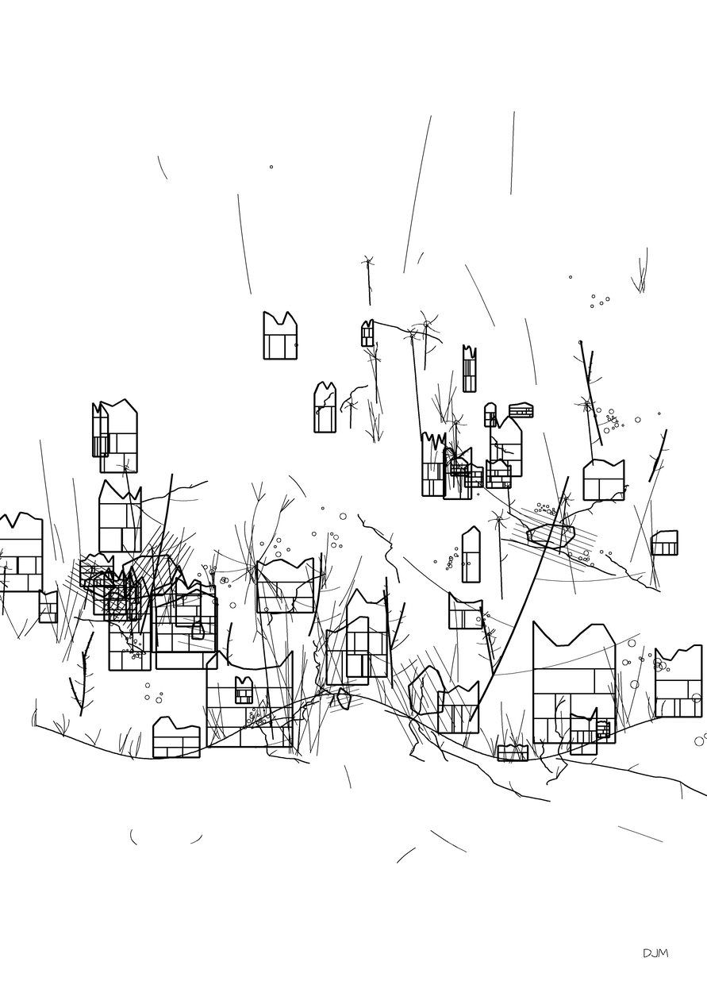
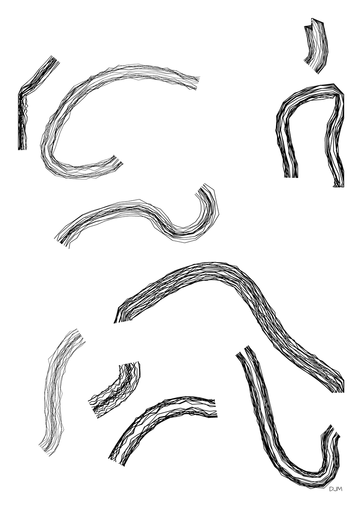
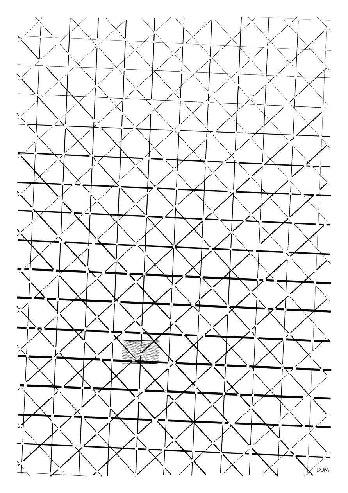
What Kandinsky Taught Our Algorithms
Three specific ideas from Point and Line to Plane show up directly in our codebase.
Force-based path generation. Kandinsky wrote: "The line is the track made by the moving point; it is created by movement -specifically through the destruction of the intense self-contained repose of the point." One force acting on a point produces a straight line. Two alternating forces produce a zigzag. Two simultaneous forces produce a curve.
Our factory_botanical uses exactly this model. Each plant element -a grass blade, a fern frond, a vine tendril -is a point moved by simultaneous forces: gravity pulling downward, wind pushing laterally, and a growth vector pointing upward with species-specific curvature. The terrain_y() function generates a ground plane from summed sine waves, and each element grows from that surface under the influence of these competing forces. The result is Bezier curves that look organic because they follow the same force-composition rules that Kandinsky identified in natural forms.
In code, this looks like computing amplitudes, phases, and frequencies for multiple octaves of sine waves, then summing them to produce a terrain function. Each botanical element samples this terrain for its origin point, then traces a path under the combined influence of gravity, wind, and growth direction. Two simultaneous forces, one curve. Kandinsky's formula, implemented literally.
Basic Plane weighting. Kandinsky divided the picture plane into regions with distinct character. The top is "lightness, dissolution, freedom." The bottom is "density, weight, constraint." Left carries associations of advance and movement; right of home and rest.
Our botanical factory scales element size by Y-position. Foreground plants (bottom of the frame) are larger, denser, rendered with thicker strokes. Background elements (top) are smaller, sparser, thinner. This isn't an arbitrary design decision -it's Kandinsky's Basic Plane theory implemented as position-dependent parameters. The stroke width varies from STROKE_THIN (0.3mm) in the upper reaches to STROKE_THICK (0.8mm) at the base, creating atmospheric perspective through pen pressure alone.
Concealed construction. Kandinsky wrote about "concealed construction" -the structural skeleton that organizes a composition but remains invisible in the final work. The viewer feels the order without seeing the grid.
Our factory_softshapes generates a flow field using four octaves of sine-wave superposition, with random frequencies between 0.005 and 0.04 per millimeter. But the field itself is never drawn. Only the shapes that follow it appear on paper. The construction is concealed, exactly as Kandinsky prescribed. When you look at a softshapes piece, you perceive coherent directional flow -shapes that move together, that share an invisible current -but the underlying angle field remains hidden. The eye registers the order without being shown the mechanism.
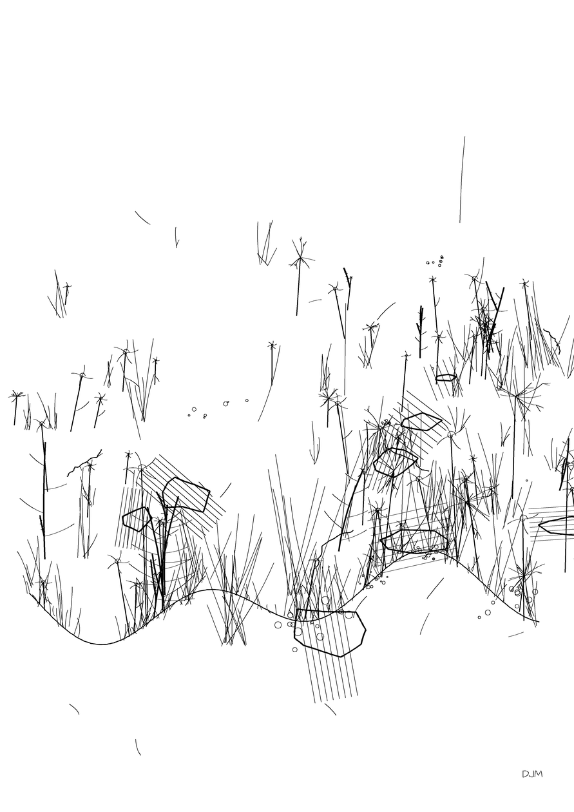
Owen Jones and the Grammar of Generative Ornament
Owen Jones published The Grammar of Ornament in 1856, 170 years before our interlace factory. The book contains 37 propositions for creating decorative patterns. Read them today and they feel like a programming specification:
Proposition 7: "All ornament should be based upon a geometrical construction." This is our grid system. Every factory begins with geometry -a triangular lattice, a hexagonal tiling, a Cartesian grid -and builds upward from there. The geometry is the data structure; the ornament is the rendering pass.
Proposition 11: "In surface decoration all the ornament should be based on traceable junctions, showing that each line grows out of another." This is our L-system and botanical factories. Every curve connects to a root. Every branch traces back to a stem. The factory_botanical explicitly models this -its vine elements grow from anchor points on the terrain surface, each tendril branching from the previous joint.
Proposition 12: "All junctions of curved lines with curved lines, or of curved lines with straight, should be tangential to each other." This is our Bezier curve constraint. Wherever two paths meet in our interlace factory, we enforce C1 continuity -the tangent vectors match at the junction. The visual result is smooth knotwork that flows without corners, even when the underlying geometry is a grid of straight intersections.
Our factory_interlace implements Jones' Arabian and Moresque principles directly. It generates star patterns by placing regular polygons on a grid and connecting their vertices along angular offsets. The "star-6" style, for example, uses a hexagonal grid where lines radiate from each center at 30-degree intervals, intersecting with neighbors to form six-pointed stars. Over/under weaving is achieved by breaking each line segment at intersection points and offsetting the crossing strands -one lifts, one dips -creating the illusion of interlaced ribbons from flat pen strokes.
Line weight controls prominence, exactly as Jones prescribed. Primary structural lines draw at 0.8mm; secondary fill lines at 0.3mm. The hierarchy of weight produces the visual depth that makes Islamic geometric patterns read as woven fabric rather than flat grids.
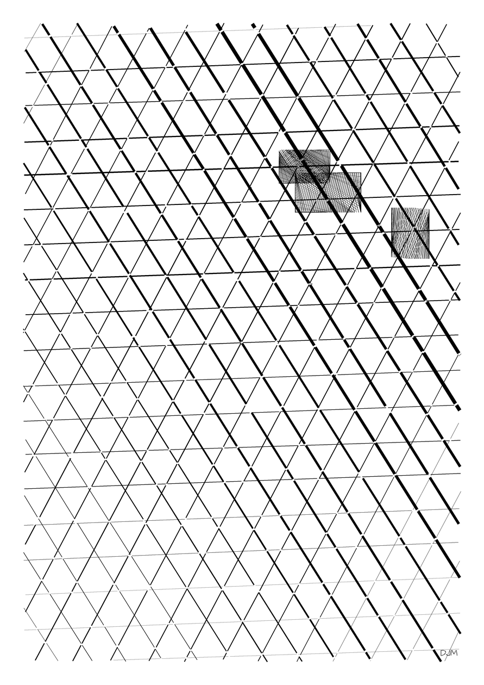
Tyler Hobbs and the Modern Canon
If Kandinsky wrote the first spec, Tyler Hobbs wrote the modern API documentation. His essays on flow fields, long-form generative art, and compositional technique gave us concrete engineering parameters.
Flow fields with angle snapping. Hobbs describes snapping flow field angles to multiples of π/N to produce "rocky, sculpted" forms rather than smooth organic ones. Our factory_softshapes implements this directly in its orthogonal style (style index 2), where angles snap to π/4 multiples. The result is shapes that feel carved rather than grown -geometric but not rigid, structured but not gridded.
Soft shapes from parallel lines. The Fidenza technique: render a thick curved rectangle not as a filled polygon but as thousands of tiny parallel lines with Gaussian noise displacement. The pen moves back and forth across the shape's width, each pass displaced slightly from the last. The accumulation of imperfect parallel strokes creates a painterly, soft-edged texture that reads as watercolor from a distance and as meticulous linework up close. Our softshapes factory implements this with 8 style variants -gentle_flow, turbulent, orthogonal, spiral, diagonal, sparse, dense, and mixed -each modulating the flow field parameters and shape density.
The squint test. Hobbs argues that strong generative art must hold at macro scale, not just in detail. If you squint at the piece and can still identify distinct compositional regions -large-scale color clumping, tonal zones, structural blocks -the composition works. If it dissolves into undifferentiated texture, it fails.
Our scoring v3 proposal implements this literally: downsample the image to 64×64 pixels, blur it, and compute entropy at that reduced resolution. A piece that maintains structure at both macro and micro scales scores higher than one that is only interesting at full resolution. This catches a specific failure mode we observed: pieces that are locally beautiful but globally uniform, with no large-scale compositional movement.
Orthogonality. For long-form generative art (editions of hundreds or thousands from a single algorithm), Hobbs emphasizes that visual features must be independent. If shape size always correlates with color, the edition collapses to a narrow band of outputs. Our factories parameterize features along independent axes -color palette, shape density, flow field frequency, stroke width, element scale -so that the combinatorial space of outputs is genuinely large.
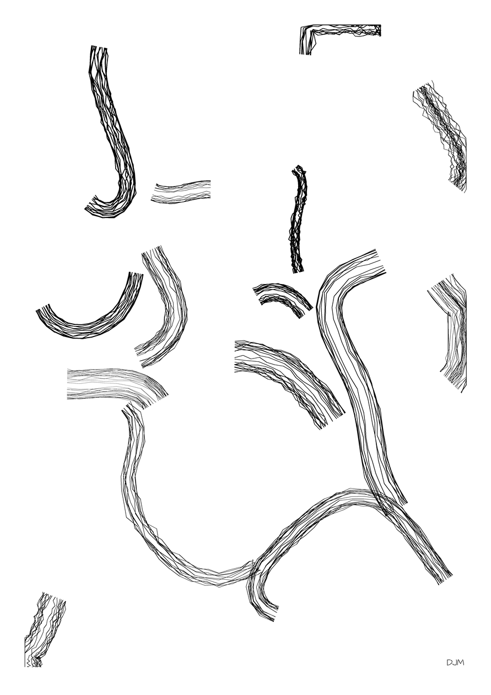
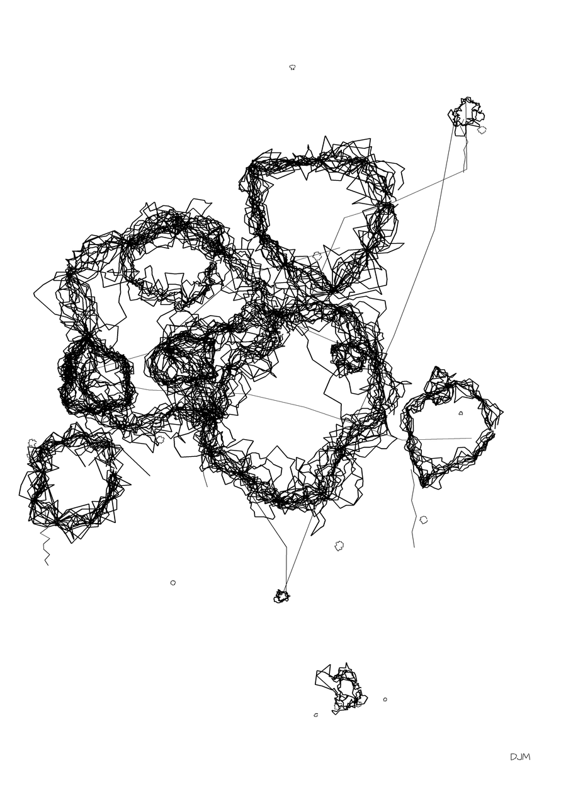
Computational Aesthetics: What 36,000 Specimens Taught Us
Running 36,772 specimens through algorithmic scoring and four LLM judges produces data. Some of it confirmed what we expected. Some of it surprised us.
Entropy is the bottleneck. Across all 40 factories, entropy (visual information density measured from the PNG histogram) is the single most constraining scoring dimension. A majority of specimens that fail to break 70/100 are held back by entropy -either too low (the piece is sparse and uniform, a few lines on a blank page) or too high (the piece is chaotic noise with no structure). This maps directly to Philip Galanter's complexity theory: aesthetic value follows a bell curve across the complexity spectrum, peaking in the "complex middle" where order and disorder coexist.
We implemented this insight by adding a quadratic penalty to the entropy metric. Raw entropy used to reward disorder linearly -more chaos, higher score. Now, the scoring curve peaks at entropy 0.5–0.7 and drops off toward both extremes. The effect was immediate: chaotic noise-fill pieces that used to score 75+ dropped to the low 60s, while structured-but-rich pieces like our moire and rayscape outputs rose.
Dense-line bias is real, and it reveals something. Our top-performing factories -moire (89.1 ceiling), opart (87.7), hatchcolor (86.2) -are all dense-line techniques. Hatched fills, overlapping grids, thousands of parallel strokes. Sparse and minimal work consistently underperforms. We initially treated this as a scoring bug, but after three rounds of recalibration, the bias persists even with human judges. Dense line art reads as "more" -more effort, more information, more visual texture. Whether this reflects genuine aesthetic preference or just a measurement artifact, we haven't fully resolved. We've documented it as a known bias and added style-axis-aware rubrics (following Wolfflin's linear/painterly distinction) to give sparse work a fairer shake.
Intra-factory uniqueness matters. Before we added intra-factory deduplication, 30% of all specimens scoring above 80 came from a single factory: moire. The moire algorithm produces consistently high-scoring outputs, but many of them look similar to each other -same visual frequency, same interference pattern, different only in subtle parameter shifts. When we added a uniqueness penalty that compares each specimen against the top 20 from its own factory (using perceptual hashing), the concentration dropped and other factories' best work surfaced. The lesson: a factory that produces one great image is less valuable than one that produces twenty genuinely different great images.
Feldman's criticism framework improved LLM judges. When we restructured our LLM judge prompts using Edmund Feldman's four-step method -description (what do you see?), analysis (how are elements organized?), interpretation (what mood does it convey?), judgment (overall quality) -the score distributions became more discriminating. Generic "rate this art" prompts produced tight, undifferentiated score clusters. Feldman-structured prompts produced wider spreads with clearer separation between strong and weak pieces. The judges still disagree with each other -that's by design, since score standard deviation captures "interestingness" -but each individual judge became more consistent and more articulate about why.
We maintain three NotebookLM knowledge bases with 22+ sources feeding these decisions: one for classic art theory (Kandinsky, Jones, Wolfflin, Galanter), one for modern generative art practice (Hobbs, Zancan, Shiffman), and one for academic computational aesthetics (NIMA, LAION, AADB). The knowledge bases function as persistent research context -we query them before making pipeline changes to check whether the modification has theoretical grounding or whether we're just overfitting to our own taste.
From Pen Plotter to Blockchain
Here is the part that would have made Kandinsky's head spin.
The same algorithm that drives a pen across A3 cotton paper can, with a parameter change, produce neon-saturated digital art for an fxhash generative drop. Our moire factory, transpiled from Python to JavaScript, ships as a 9KB zip file with 5 output modes: plotter (graphite lines on warm paper), vivid (rich color on dark backgrounds), delicate (soft monochrome and cool tones), neon (fluorescent strokes on near-black), and watercolor (translucent layered washes). The algorithm is identical across all five modes. What changes is the palette, the stroke treatment, and the background. The geometry -the mathematical core that creates interference patterns from overlapping circle grids -is invariant.
This is the argument for treating the algorithm as the artwork. The SVG on paper and the Canvas element on-chain are both projections of the same underlying structure. The medium is a parameter. The math is the piece.
We have two fxhash projects packaged and ready to mint -moire (8 styles, 22 palettes) and opart (8 styles, 18 palettes, with a polygon-count feature that produces dramatically different outputs at the extremes). Both use the multi-output-mode architecture, meaning collectors receive not just a static image but a position in a parameter space -a specific combination of style, palette, and mode that no other token will ever reproduce.
Meanwhile, back in the physical world, we have SVGs queued for plotting on an AxiDraw. The same specimens that could become on-chain tokens are also being drawn with archival ink on acid-free paper. The pen takes forty minutes to complete a single A3 moire. The blockchain transaction takes four seconds. The algorithm doesn't care. It produced both.
Kandinsky wanted to find the universal laws of visual form -principles that would hold regardless of medium, culture, or era. He didn't have the tools to test that claim at scale. We do. Forty factories, thirty-six thousand specimens, a scoring pipeline grounded in a century of art theory, and output modes that span physical ink to on-chain generative tokens.
The line is still the track made by the moving point. We just have more ways to move it now.
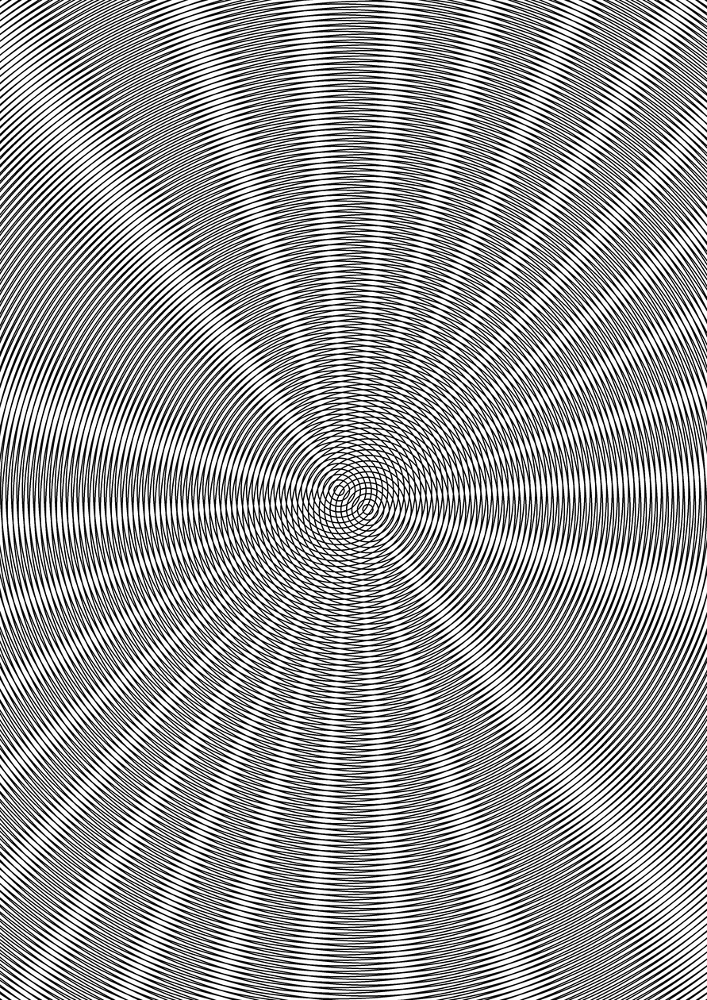
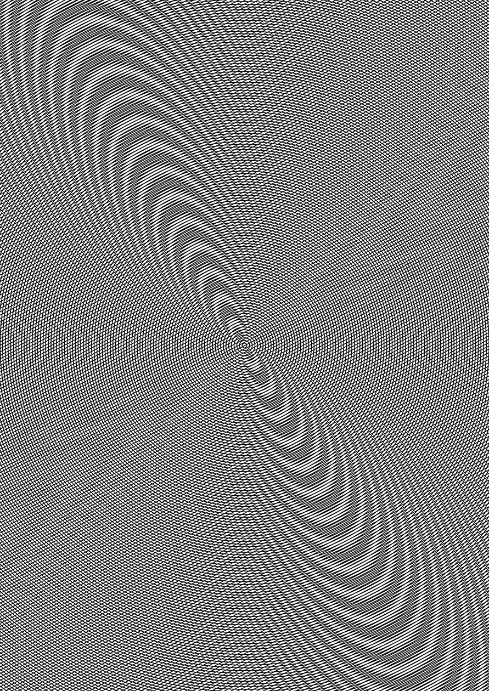
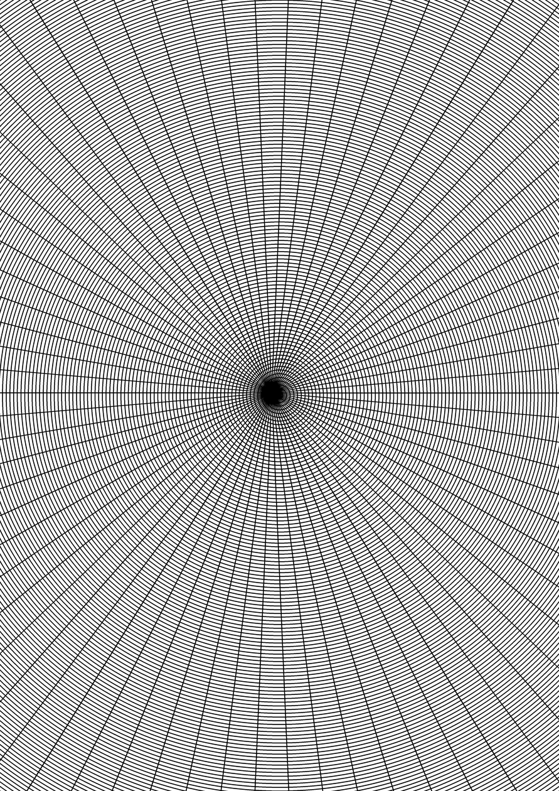
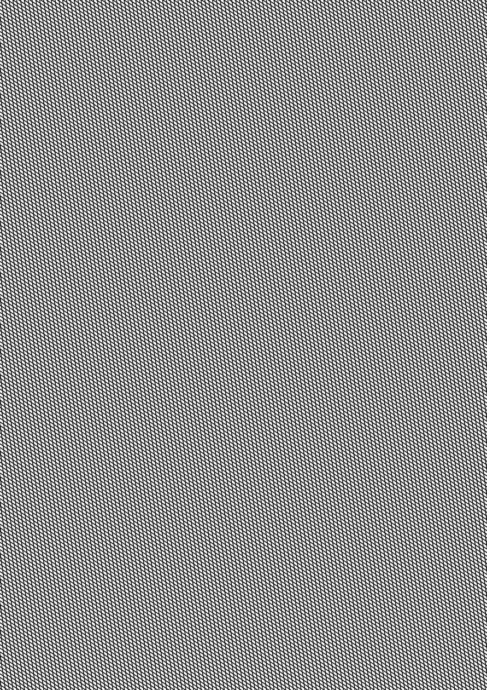
Edgeless Lab builds generative art systems for pen plotters and on-chain platforms. Follow the work at edgelesslab.com/pen-plotter.